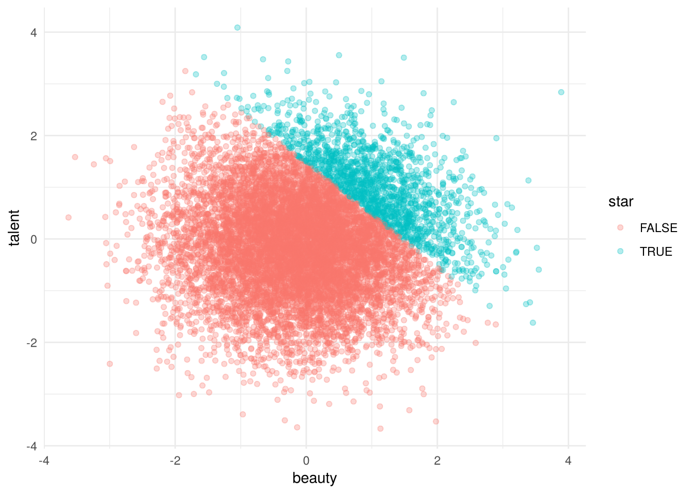
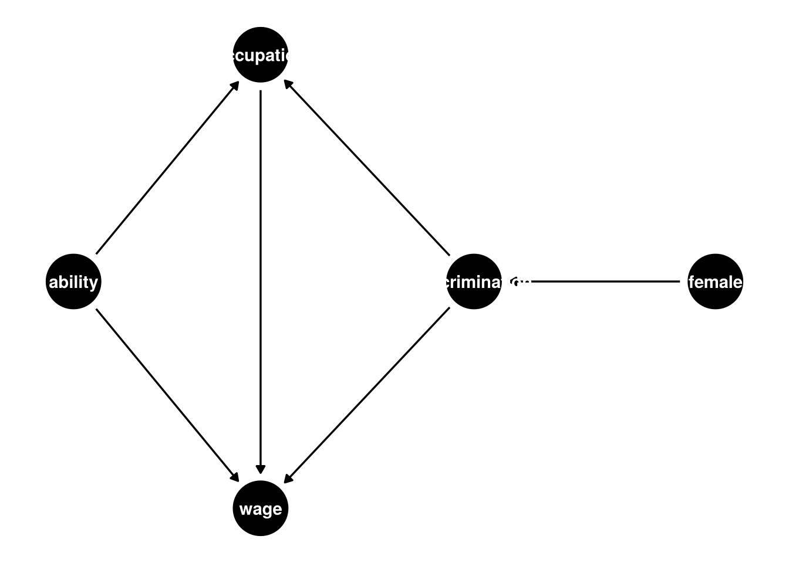

import numpy as np
import pandas as pd
import statsmodels.formula.api as smf
rng = np.random.default_rng(42)
n = 10_000
female = rng.binomial(1, 0.5, n)
ability = rng.normal(size=n)
discrimination = female.copy()
occupation = 1 + 2 * ability + 0 * female - 2 * discrimination + rng.normal(size=n)
wage = 1 - 1 * discrimination + 1 * occupation + 2 * ability + rng.normal(size=n)
tb = pd.DataFrame(dict(female=female, ability=ability, discrimination=discrimination,
occupation=occupation, wage=wage))Session 2 · Directed acyclic graphs
Book chapter 3
Learning goals
Everyone should leave able to read a directed acyclic graph (DAG: nodes, arrows, missing arrows), list the backdoor paths between a treatment and an outcome, apply the backdoor criterion to decide what to condition on, and explain — with a simulation they ran — why conditioning on a collider creates bias where none existed.
| Time | Block |
|---|---|
| 0:00 | Recap: regression anatomy; “controlling for” is mechanical |
| 0:05 | Concepts: DAG grammar, confounders, colliders, the backdoor criterion |
| 0:20 | Walkthrough: the gender-discrimination DAG by simulation; the talent–beauty collider |
| 0:45 | Exercise 1 kickoff (draw the DAG first!) |
| 0:55 | Assign exercises; preview potential outcomes |
Key ideas
A directed acyclic graph (DAG) is a set of causal claims, including the arrows you leave out. Nodes are variables; a directed edge \(A \to B\) says \(A\) causes \(B\); the absence of an edge is the strong claim that there is no direct effect. “Acyclic” means you can never follow arrows in a loop back to where you started. The DAG encodes your prior knowledge of the data-generating process — theory, institutional detail, previous studies — and that is what makes it useful: it forces you to write down what you believe before you touch data.
In plain English
A DAG is a sketch of your story about how the world works: boxes for the things you measure, arrows for “this one causes that one.” Drawing it before you run anything makes your assumptions visible, which is the point — you can argue about a picture, but you can’t argue about an assumption nobody wrote down.
Paths and what blocks them. A backdoor path from \(D\) to \(Y\) is any path starting with an arrow into \(D\). Backdoor paths carry non-causal association. A path is blocked if it contains a non-collider you condition on, or a collider you do not condition on. A collider is a node where two arrows meet (\(A \to C \leftarrow B\)). Conditioning on a collider (or its descendant) opens the path.
In plain English
Think of paths as pipes that can carry a fake correlation from the treatment to the outcome. A confounder (a common cause of both) is a pipe that is open by default; you close it by controlling for the confounder. A collider (something caused by both) is a pipe that is closed by default; controlling for it opens the pipe. Same action, opposite effect, depending only on which way the arrows point.
The backdoor criterion. A set of variables \(X\) satisfies the backdoor criterion for \((D, Y)\) if \(X\) blocks every backdoor path and contains no descendant of \(D\). Then conditioning on \(X\) identifies the causal effect of \(D\) on \(Y\). This is the formal version of “conditional independence” and “selection on observables” that Sessions 4 and 7 rely on.
In plain English
The backdoor criterion is a checklist for what to put in your regression: enough variables to close every fake pipe, and nothing that sits downstream of the treatment. It can say “control for nothing” (if the treatment was randomized) or “you cannot fix this with controls at all” (if a confounder is unmeasured). Both are legitimate answers.
Collider bias is the chapter’s main warning. The book’s discrimination example: female \(\to\) discrimination \(\to\) occupation \(\to\) wage, with discrimination \(\to\) wage directly and unobserved ability \(\to\) occupation and ability \(\to\) wage. Occupation is a collider on the path discrimination \(\to\) occupation \(\leftarrow\) ability \(\to\) wage. “Controlling for occupation,” which sounds like good practice, opens that path and makes discrimination look like it raises wages. The second example — a negative talent–beauty correlation among movie stars when both are independent in the population — is the same mechanism via sample selection.
In plain English
Suppose discrimination pushes women out of high-paying jobs, and high-ability people get into them. Among women in a given job, the ones who made it there against the headwind tend to be unusually able — and are paid for it. Comparing men and women within the same job therefore makes discrimination look harmless or even helpful. The job variable is the collider; comparing “within” it is the mistake.
Walkthrough
Step 1 — Simulate the discrimination DAG
The DGP, following the book: discrimination is a deterministic function of being female; occupation depends on ability and discrimination; wages depend on discrimination, occupation and ability.
library(tidyverse)
library(estimatr)
set.seed(42)
n <- 10000
tb <- tibble(
female = rbinom(n, 1, 0.5),
ability = rnorm(n),
discrimination = female,
occupation = 1 + 2 * ability + 0 * female - 2 * discrimination + rnorm(n),
wage = 1 - 1 * discrimination + 1 * occupation + 2 * ability + rnorm(n)
)Step 2 — Three regressions, three answers
for f in ["wage ~ female",
"wage ~ female + occupation",
"wage ~ female + occupation + ability"]:
print(f, "\n", smf.ols(f, data=tb).fit().params.round(3), "\n")wage ~ female
Intercept 2.072
female -3.005
dtype: float64
wage ~ female + occupation
Intercept 0.197
female 0.567
occupation 1.803
dtype: float64
wage ~ female + occupation + ability
Intercept 1.003
female -1.021
occupation 0.997
ability 2.005
dtype: float64 lm_1 <- lm(wage ~ female, data = tb)
lm_2 <- lm(wage ~ female + occupation, data = tb)
lm_3 <- lm(wage ~ female + occupation + ability, data = tb)
modelsummary::modelsummary(list("Biased unconditional" = lm_1,
"Biased (collider)" = lm_2,
"Unbiased conditional" = lm_3),
gof_omit = ".*")| Biased unconditional | Biased (collider) | Unbiased conditional | |
|---|---|---|---|
| (Intercept) | 2.000 | 0.179 | 0.986 |
| (0.060) | (0.020) | (0.018) | |
| female | -3.046 | 0.614 | -0.974 |
| (0.085) | (0.030) | (0.028) | |
| occupation | 1.796 | 1.004 | |
| (0.006) | (0.010) | ||
| ability | 1.989 | ||
| (0.022) |
female ≈ −3.0 unconditionally (the total effect: −1 direct, −2 through occupation). Adding occupation flips it to ≈ +0.57 — controlling for a collider makes discrimination look beneficial. Adding ability restores the direct effect ≈ −1.0. Only the third regression could be run in real life if ability were observed, which it usually is not.
Step 3 — Why: trace the paths
Have participants list every path from discrimination to wage and classify each node.
| Path | Type | Open when conditioning on occupation? |
|---|---|---|
| discrimination → wage | causal (direct) | yes, always |
| discrimination → occupation → wage | causal (mediated) | blocked (you removed it) |
| discrimination → occupation ← ability → wage | non-causal, occupation is a collider |
opened |
Conditioning on occupation removes the mediated effect you probably wanted to keep and opens a spurious path you definitely did not want. Both move the estimate upward.
Step 4 — The talent–beauty collider by selection
rng = np.random.default_rng(3)
pop = pd.DataFrame({"beauty": rng.normal(size=10_000),
"talent": rng.normal(size=10_000)})
pop["score"] = pop.beauty + pop.talent
cutoff = pop.score.quantile(0.85)
pop["star"] = pop.score >= cutoff
print("population corr:", pop[["beauty", "talent"]].corr().iloc[0, 1].round(3))population corr: -0.006print("stars corr: ", pop.loc[pop.star, ["beauty", "talent"]].corr().iloc[0, 1].round(3))stars corr: -0.661set.seed(3)
pop <- tibble(beauty = rnorm(10000), talent = rnorm(10000)) %>%
mutate(score = beauty + talent,
star = score >= quantile(score, 0.85))
cor(pop$beauty, pop$talent)[1] -0.008185414with(filter(pop, star), cor(beauty, talent))[1] -0.7178036ggplot(pop, aes(beauty, talent, colour = star)) +
geom_point(alpha = 0.3) + theme_minimal()
Population correlation ≈ 0 ; among “stars” it is strongly negative (around −0.65). Nothing causal links beauty and talent; the sample was selected on their sum. Selection on a collider is conditioning on a collider.
Step 5 — (Optional, R only) Let dagitty find the adjustment set
library(dagitty); library(ggdag)
g <- dagitty("dag {
female -> discrimination
discrimination -> occupation
discrimination -> wage
ability -> occupation
ability -> wage
occupation -> wage
}")
adjustmentSets(g, exposure = "discrimination", outcome = "wage", effect = "total") {}adjustmentSets(g, exposure = "discrimination", outcome = "wage", effect = "direct"){ ability, occupation }ggdag(g) + theme_dag()
For the total effect the empty set suffices (no backdoor paths into discrimination). For the direct effect you must condition on occupation and ability. In Python, networkx can draw the graph but has no backdoor solver; this is one place where the R tooling is simply better.
Exercises
- Draw before you regress. A study finds that among hospitalized patients, smoking is negatively associated with COVID-19 severity. Draw a DAG in which smoking does not protect against severe illness but this association appears anyway. Simulate it and show the sign reversal.
- Mediator or collider? In the Step 1 DGP, change
occupationso that it is caused byfemaledirectly (set the0 * femalecoefficient to−1) rather than only through discrimination. Re-run the three regressions. Which coefficients change, which do not, and why does the backdoor criterion still give the same answer for the total effect? - Bad controls in the wild. Find one published or newsroom regression (any field) that controls for something plausibly downstream of the treatment. Draw its DAG, and write three sentences on whether the control is a mediator, a collider, or harmless.
Solutions
Solutions (click to expand)
1. One DAG: smoking → hospitalization ← severity (both smoking-related illness and severe COVID get you admitted), with smoking having no arrow to severity. Restricting the sample to the hospitalized conditions on the collider.
rng = np.random.default_rng(7); n = 100_000
smoke = rng.binomial(1, 0.3, n)
severity = rng.normal(size=n) # independent of smoking
hosp = (0.8*smoke + severity + rng.normal(size=n)) > 1.0
d = pd.DataFrame(dict(smoke=smoke, severity=severity, hosp=hosp))
print(smf.ols("severity ~ smoke", d).fit().params["smoke"]) # ≈ 0
print(smf.ols("severity ~ smoke", d[d.hosp]).fit().params["smoke"]) # < 02. The unconditional female coefficient becomes more negative, ≈ −4 (−1 direct via discrimination, −2 via discrimination→occupation, and now −1 more via female→occupation); the collider regression is now ≈ +1.4, even more misleading; the full regression still returns ≈ −1. The collider regression is still wrong, and the full regression now returns the direct effect of female holding occupation fixed, which is −1 (through discrimination). The total effect is still identified with no controls because there are still no arrows into female: randomness of the treatment is what makes the empty adjustment set valid.
3. Open-ended. Common finds: wage regressions that control for occupation or industry; health studies that control for BMI when the treatment affects weight; education studies controlling for test scores measured after the intervention.
Facilitator notes
Facilitator notes (click to expand)
Make them draw. The biggest failure mode of this session is treating the DAG as decoration for a regression someone already planned. Have each participant sketch the discrimination DAG on paper before Step 2 and predict the sign of the collider regression. Most will predict it stays negative.
Misconception: “more controls are always safer.” Steps 2–3 are the counterexample. Reinforce that the backdoor criterion is a set of variables, and that it can be empty.
Misconception: colliders only matter if you put them in the regression. Step 4 shows selection into the sample does the same thing. Ask: how was this dataset assembled?
If running short. Drop Step 5; it is a nice-to-have for the R users.
Discussion prompts. (a) Where did the arrows in the discrimination DAG come from — data or theory? (b) Can a DAG be tested? (Partially: it implies conditional independencies you can check, but it cannot be derived from data alone.)
Bridge to next session. DAGs tell you what must be true for conditioning to work. Potential outcomes give you the language for what you are estimating — the average treatment effect (ATE) and the effect on the treated (ATT) — and what randomization buys you.